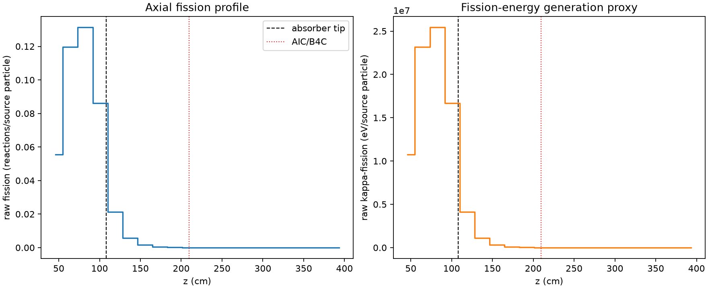
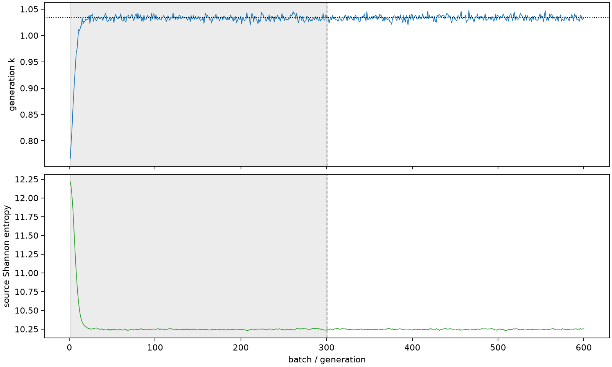

| field | value |
|---|---|
| experiment | V2-STAGE_128_OGRENCI_02-0017 |
| k | 1.0336271534078352 |
| MC standard error | 0.00017892493812169744 |
| seconds | 939.3217427689997 |
| acceptance | not_assessed |
| convergence | review_required |
Completed is output integrity only; physical and statistical review required. Zero tallies do not prove zero production or zero uncertainty.
| diagnostic | value |
|---|---|
| geometric fuel voxels | 5280 |
| zero fission tally voxels | 2010 |
| low signal fuel voxels | 2896 |
| low signal fission share | 9.07700876226651e-05 |
| low signal kappa share | 9.080689706375176e-05 |
| important fission share | 0.9500403910613539 |
| previous filter included | 2384 |
| duration estimate s | 1562.5173488400023 |
| actual minus estimate s | -623.1956060710027 |
| fission relative MC error | statistics |
|---|---|
| all_geometric_fuel | {"voxels": 5280, "positive_mean_voxels": 3270, "zero_mean_voxels": 2010, "undefined_relative_error_voxels": 2010, "median": 0.036504333392349014, "p95": 0.8650794406627003, "maximum": 1.0000000000000002} |
| low_signal | {"voxels": 2896, "positive_mean_voxels": 886, "zero_mean_voxels": 2010, "undefined_relative_error_voxels": 2010, "median": 0.5237712651165993, "p95": 1.0, "maximum": 1.0000000000000002} |
| important_95pct | {"voxels": 1143, "positive_mean_voxels": 1143, "zero_mean_voxels": 0, "undefined_relative_error_voxels": 0, "median": 0.005170841626177056, "p95": 0.009982180832187262, "maximum": 0.011511311106102455} |
| outside_previous_filter | {"voxels": 2896, "positive_mean_voxels": 886, "zero_mean_voxels": 2010, "undefined_relative_error_voxels": 2010, "median": 0.5237712651165993, "p95": 1.0, "maximum": 1.0000000000000002} |
| kappa_fission relative MC error | statistics |
|---|---|
| all_geometric_fuel | {"voxels": 5280, "positive_mean_voxels": 3270, "zero_mean_voxels": 2010, "undefined_relative_error_voxels": 2010, "median": 0.03644800271017644, "p95": 0.865913265557063, "maximum": 1.0000000000000002} |
| low_signal | {"voxels": 2896, "positive_mean_voxels": 886, "zero_mean_voxels": 2010, "undefined_relative_error_voxels": 2010, "median": 0.5228587742495967, "p95": 1.0, "maximum": 1.0000000000000002} |
| important_95pct | {"voxels": 1143, "positive_mean_voxels": 1143, "zero_mean_voxels": 0, "undefined_relative_error_voxels": 0, "median": 0.005163819722420288, "p95": 0.009965931428358608, "maximum": 0.011493073660970483} |
| outside_previous_filter | {"voxels": 2896, "positive_mean_voxels": 886, "zero_mean_voxels": 2010, "undefined_relative_error_voxels": 2010, "median": 0.5228587742495967, "p95": 1.0, "maximum": 1.0000000000000002} |
| axial bin | fission share | kappa-fission share |
|---|---|---|
| 1 | 0.1314746405669002 | 0.13147690514320096 |
| 2 | 0.2835900524097358 | 0.2835788326607532 |
| 3 | 0.3114489018053448 | 0.31143677080947274 |
| 4 | 0.2042232388739741 | 0.2042202909351285 |
| 5 | 0.05073159104599746 | 0.05074878837318173 |
| 6 | 0.013518135927555975 | 0.013523088492401884 |
| 7 | 0.00366497987753161 | 0.0036663539610442596 |
| 8 | 0.0009940385482366545 | 0.000994406590535088 |
| 9 | 0.0002626518989901915 | 0.0002627553973146451 |
| 10 | 7.39043431788902e-05 | 7.393249001714003e-05 |
| 11 | 1.4753071986593211e-05 | 1.476193012049089e-05 |
| 12 | 2.972556459437976e-06 | 2.973212316276255e-06 |
| 13 | 1.1937942903782219e-07 | 1.1991972501223482e-07 |
| 14 | 1.1906754705163935e-08 | 1.2141977580597142e-08 |
| 15 | 7.787924628261154e-09 | 7.942810498321384e-09 |
| 16 | 0.0 | 0.0 |
| 17 | 0.0 | 0.0 |
| 18 | 0.0 | 0.0 |
| 19 | 0.0 | 0.0 |
| 20 | 0.0 | 0.0 |
Histories include the inactive-to-active transition at batch 300. kappa-fission approximates fission energy production, not total heat deposition.

